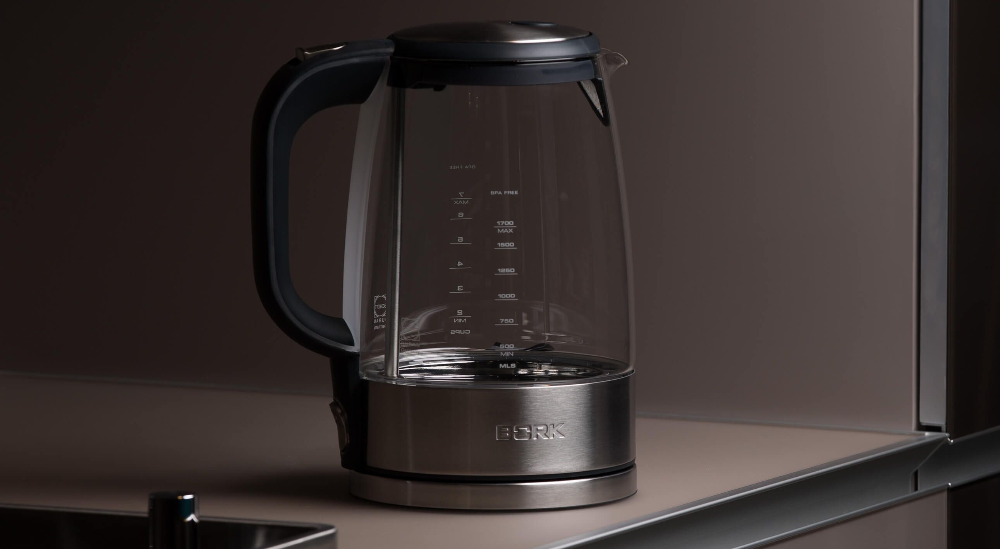
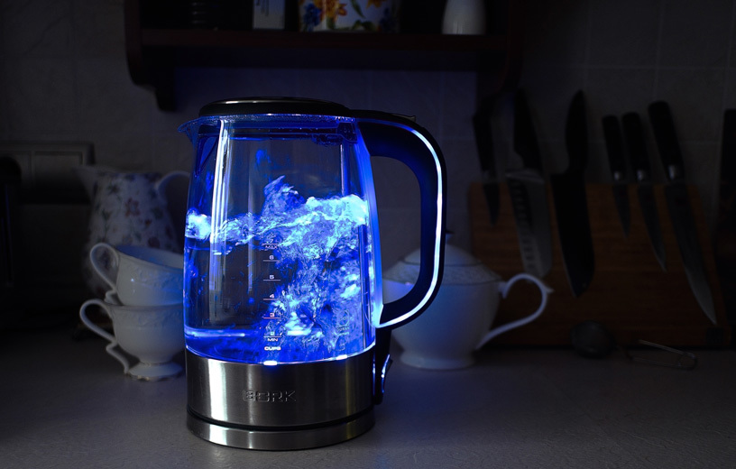
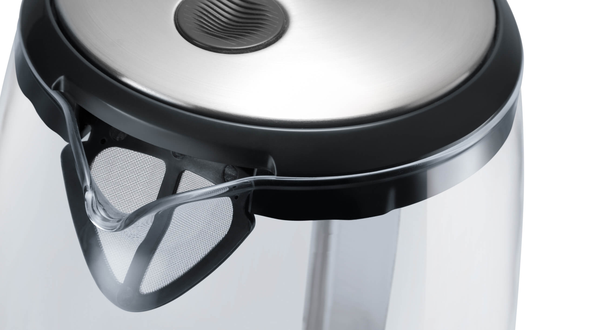
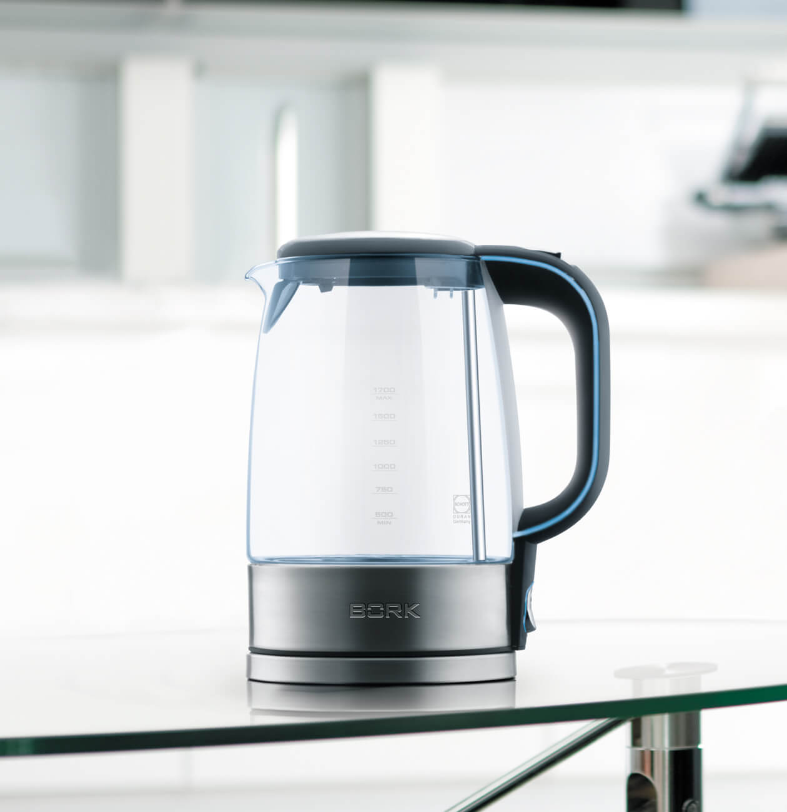

Чайник К515
Удобная и элегантная модель из термостойкого стекла.
Стиль
Подсветка и стеклянный корпус подчеркивают изящество модели. Завораживающее зрелище, когда бурлящие пузырьки поднимаясь, подсвечиваются неоновым цветом.
Качество и безопасность

Колба чайника BORK K515, изготовлена из немецкого термостойкого стекла Schott Duran, не содержащего примеси и посторонние компоненты, что положительно сказывается на вкусе воды. Автоматическое отключение при отсутствии воды и прорезиненная ручка делают чайник удобным в использовании.
Защита от попадания накипи
Съемный металлический фильтр обеспечивает качественное очищение воды и отличается долговечностью.
Продуманная конструкция

Большой диаметр крышки позволяет удобно заливать воду и при желании промыть чайник. Идеальный угол наклона носика обеспечивает равномерную подачу воды, не образуя подтёков по корпусу и избегая пролива мимо чашки.
Технические характеристики

Мощность 2000-2400 Вт
Объём 500 мл - 1,7 л
Материал корпуса Нержав.сталь, стекло
Срок гарантии 1 год
Фильтр от накипи Металлический
Автоотключение Есть
Подсветка Есть
Звуковые сигналы Нет
Отключение без воды Есть
Плавное открывание крышки Нет
Нагревательный элемент Скрытый
Контакт с базой 360˚
Длина кабеля 1,05 м
Вес 1,5 кг
Тип управления Механическое
Страна производства Китай